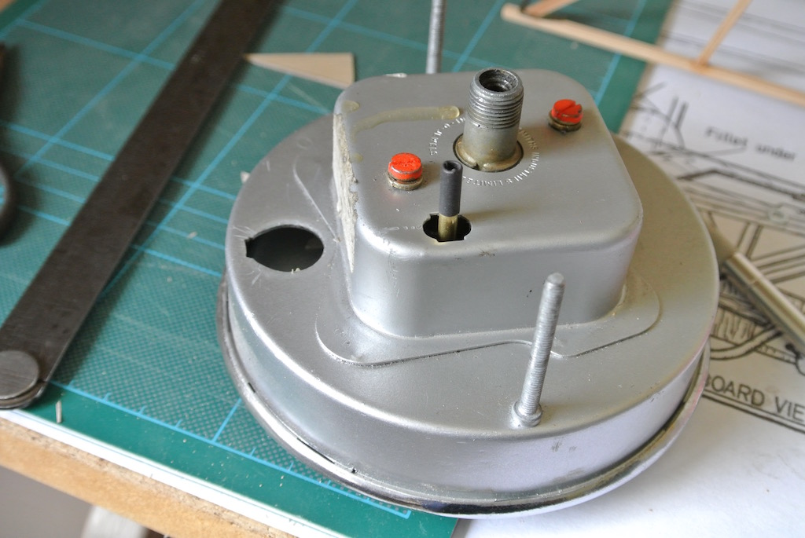
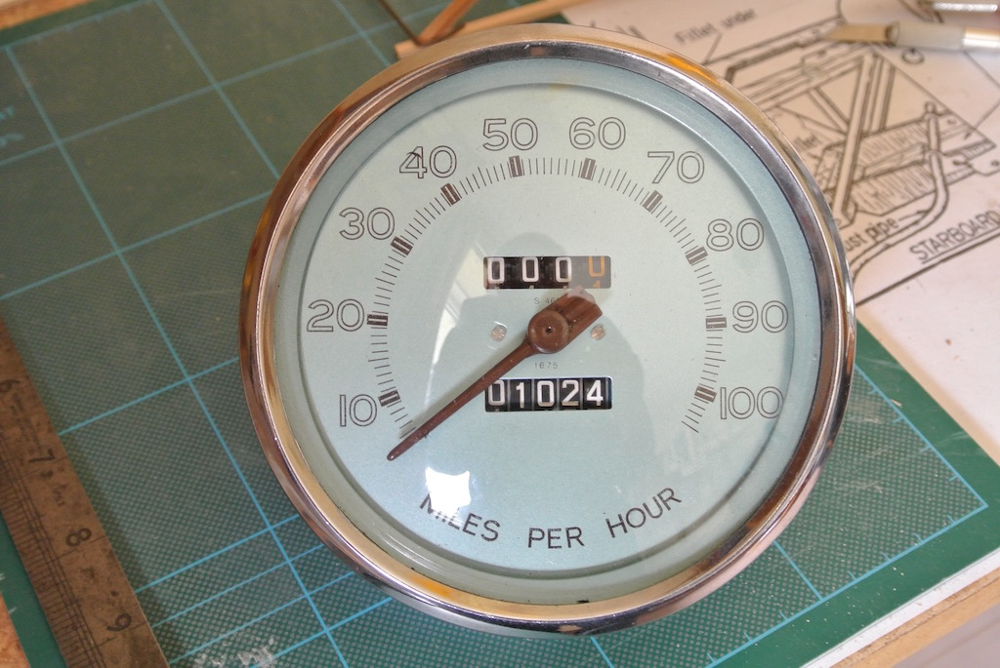

Both the tachometer and the speedometer had been replaced by the previous owner of TC4985 and the odometer showed 148 miles when I bought it in June 2015. Now, in the middle of August 2016, it records 1024 miles. However, the trip meter, showing a few miles less, had no means of resetting it, which is a problem when trying to follow a published route with milage indications. So I took some photos of the rear of the dash (just by holding the camera in roughly the right place) so as to find out how the meter was held in place and whether or not there was a connection for resetting the trip.
As you can see from the photo, I was able to remove the meter and there is a hole in the rear case that exposes a square pin that, if pulled and rotated, resets the trip meter. The photo shows my solution. I pushed on to the pin a piece of 4mm brass tube, covering the end of the tube with a piece of heat-shrink tubing. The brass tube was a tight push fit on to the square pin and the heat-shrink did not need heating. Although I need to reach under the dash to reach the tube, it is easy to pull and rotate to reset the trip meter.
In an article in the August 2011 issue of Totally T-Type titled MG TC Dash Instruments – Let’s Face the Facts, Doug Pelton explains that the original TC speedometer was a BRITISH JAEGER / S. 461 / 1675 / MILES PER HOUR, where S.461 is the original part number and 1675 represents the internal gearing or cable turns per mile (TPM).
The speedometer in TC4985 has 'SMITHS INDUSTRIES LTD' stamped on the rear casing, but has no maker's name on the dial. Also, the odometer and trip meter are in opposite locations compared to the photo of a Jaeger instrument shown in the article. However, the speedometer in TC4985 does show on the face the numbers S.461 and 1675, the former just above the needle pivot and the latter just below.
So the speedometer in TC4985 may not be of the original type, but it is the right model number and,perhaps more importantly, has the correct gearing.
When I took the car for a run I found that the speedometer needle was bouncing, particularly at low speeds. I could also hear a periodic scraping sound that coincided with the needle bounce. I removed the cable drive and found that I had not pulled the cable through the fixing bracket enough and so it was bent too much, causing the inner cable to rub on the sheath. With the cable pulled through the fixing bracket, the speedometer needle was very stable (and quiet).
After another run I found that I could not reset the trip meter! So on August 30th 2016 I took the speedometer out again. This time I removed the chrome bezel and the glass, removed the two red screws at the rear and removed the workings from the case. I removed the bezel by gently prising the rear lip away from the case, working around the rim many times, until I could push off the bezel. When I replaced it I used some pliers (and some padding) to gently bend the rear edge back behind the case.
Having removed the workings I discovered that the square ended pin just needed a little more force to turn it and so reset the trip meter. My brass tube was simply turning on the pin. So I squashed the tube so that it was a very tight fit on the pin and applied some heat to the shrink wrap so that it does not turn on the tube.
I forgot to take a photo of the workings, but it has a plastic frame and so is a newer type of Smiths speedometer as described in 'Repairing Jaeger & Smiths Speedometers' by Anthony Rhodes and dated 2000. I also discovered that it is only necessary to turn the pin to wind the trip numbers back to zero. There is no need to pull it out; any movement is just slack in the mechanism. Once you have brought all the numbers to zero it is not possible to turn the dials any further.
Return to MG TC4985© David James 2016 Last updated: 30th August 2016